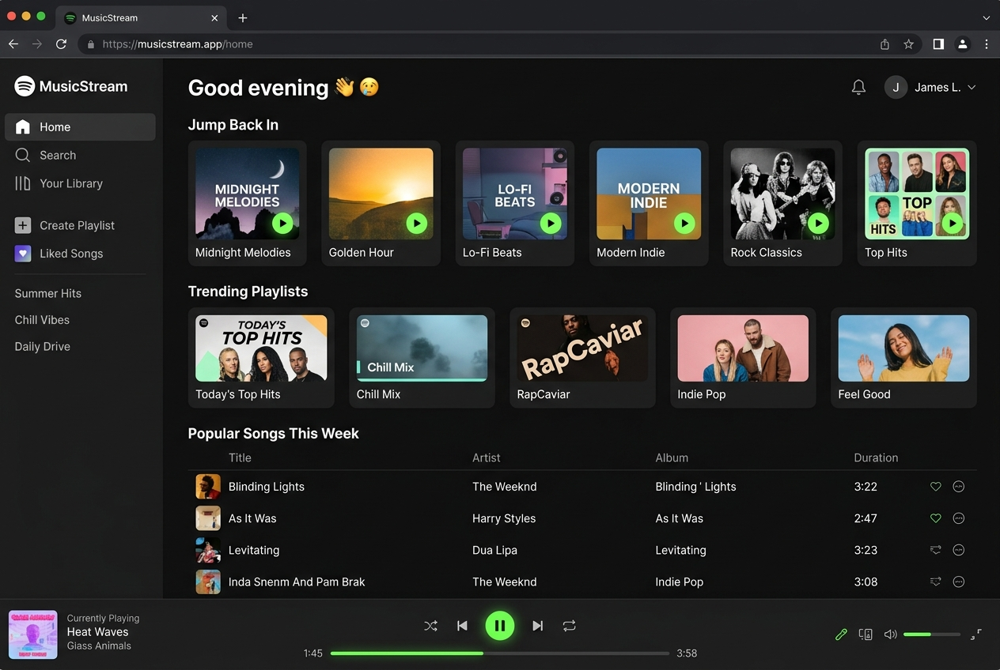

The Problem & Solution
Streaming media players in the browser often suffer from audio latency, track transition deadlocks, desynchronized scrubber bars during playback, and memory leaks from uncleaned audio context instances.
Event-Driven Web Audio Stream Engine
Implemented a centralized audio controller utilizing HTML5 audio and the Web Audio API. Integrates hardware-accelerated scrubber updates, seamless track queues, animated equalizer telemetry, and resilient state recovery with zero third-party dependencies.

Audio Playback Core

Seamless Audio Buffer Playback
Non-blocking asynchronous audio stream buffering with instant play/pause responses and smooth cross-track transitions.
60 FPS Scrubber Synchronization
Real-time playback position tracking with interactive drag-to-seek scrubber support and precise timestamp telemetry.
Dynamic Playlist Queue Management
Instantaneous playlist track swapping, previous/next index stepping, and automatic track advancement upon playback completion.
Volume Gain Node & Equalizer
Decibel attenuation controls with animated multi-bar frequency equalizers synchronizing to the playback state.
Queue Architecture & Code
// Centralized Audio Playback Controller
class AudioPlaybackEngine {
constructor(tracks = []) {
this.tracks = tracks;
this.currentIndex = 0;
this.audio = new Audio();
this.isPlaying = false;
this.setupEvents();
}
togglePlay() {
if (this.isPlaying) {
this.audio.pause();
this.isPlaying = false;
} else {
this.audio.play().then(() => {
this.isPlaying = true;
});
}
}
nextTrack() {
this.currentIndex = (this.currentIndex + 1) % this.tracks.length;
this.loadTrack(this.currentIndex);
}
}Non-Blocking Audio Node Pipeline
Leverages native browser media subsystems for hardware-accelerated audio decoding and mixing.
Zero Reflow Visualizers
Equalizer animations utilize CSS transform heights, ensuring steady 60 FPS graphics during playback.
Zero Framework Overhead
Delivers a full-fledged streaming client with instant sub-millisecond DOM reactivity.
Performance & Benchmarks
Key Challenges & Solutions
Browser Autoplay Policy Restrictions
Modern browsers strictly block unprompted programmatic audio playback without prior direct user interaction gestures.
Scrubber Stuttering During User Drag
Simultaneous audio timeupdate events and manual scrubber drag events caused UI jitter and audio stutter.